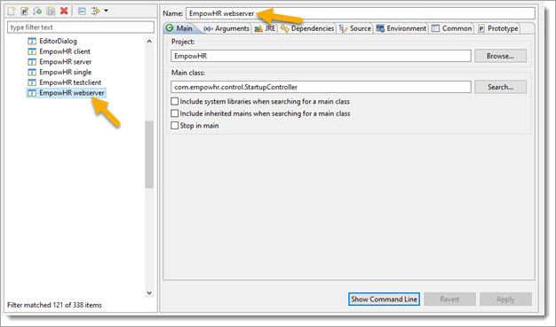
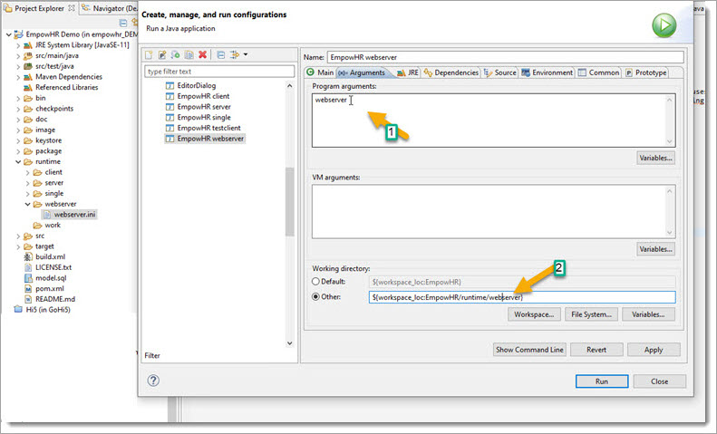
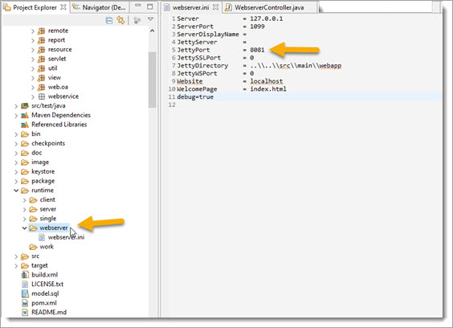
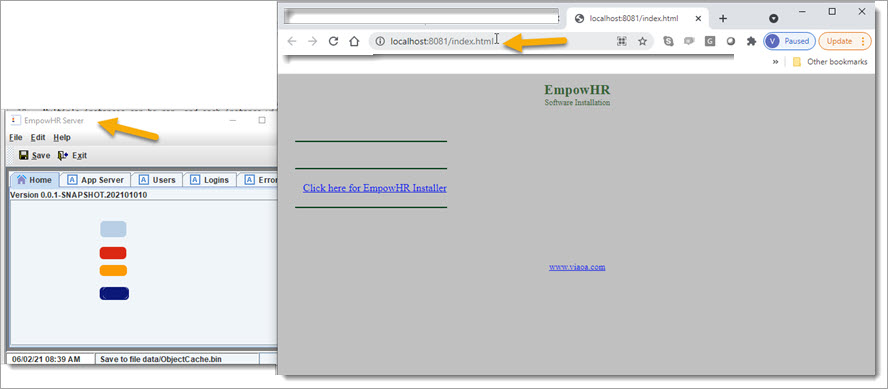

While we have the server running, let us use the browser to see some features of the webserver.
The server uses embedded Jetty for a zero admin webserver. It is configured as a high-end webserver with built-in services, including Java Server Pages, web services (SOAP), remoting through HTTP, REST API, Swagger/OpenAPI, security,
and many more features.
The Application can also be run as a webserver only so that the application can be divided into "micro-services". Multiple instances can be run, and each instance will "know" how to connect to the server application.
To do this, create another run type using the runtime/webserver directory and change the param to "webserver".


Run the Server first, and then start up a web server instance.
To start multiple instances of the web server on your computer, you'll need to start each one on a different port number. This can be done by creating more then one runtime/webserver directories (webserver1,2,3...) and edit the webserver.ini to change the port.

This shows the Server and a Webserver running.
